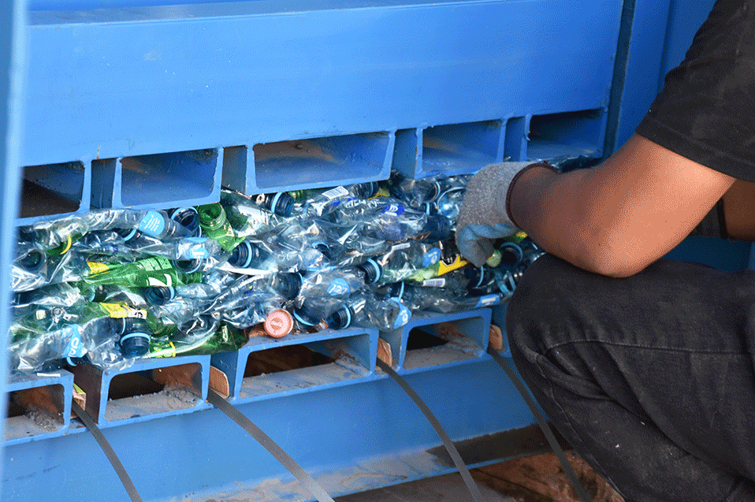
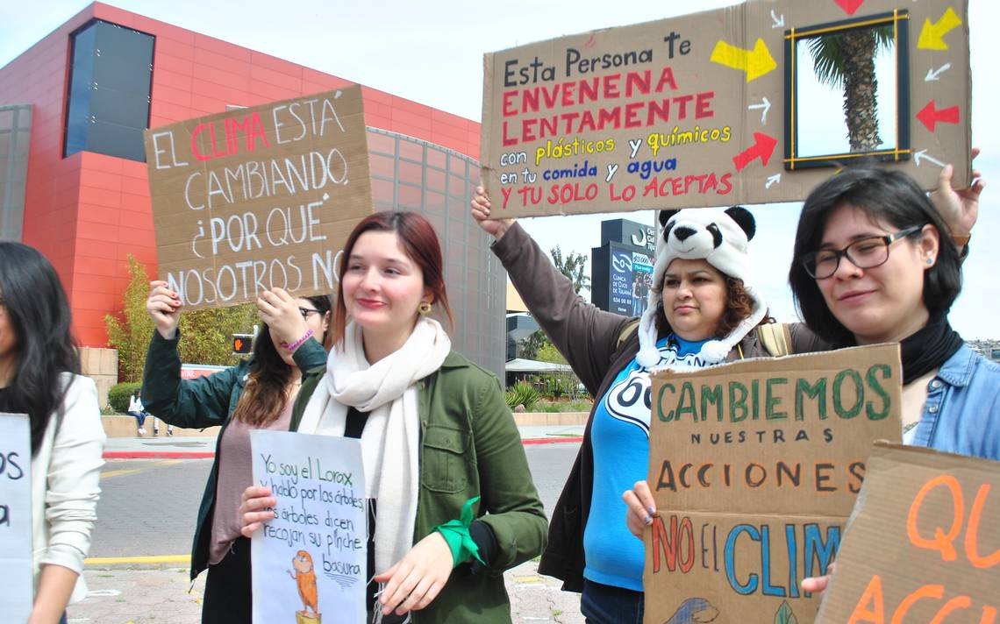
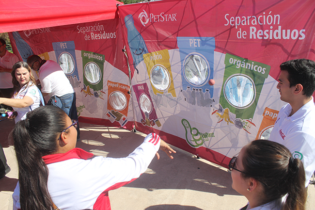

NUESTRA VISION
Nuestra vision en esta propuesta es conseguir un Tijuana limpio y seguro para la salud de los habitantes, nuestro proposito es conseguir un ambiente sano para nosotros y las generaciones futuras en Tijuana. Para mejorar Tijuana, una ciudad vibrante pero con desafíos, se necesitan soluciones integrales que aborden diversos aspectos, desde infraestructura hasta educación y desarrollo económico. A la derecha podemos ver una imagen de ciudadanos haciendo movimientos para ayudar el ambiente en Tijuana.
ACCIONES
PASOS PARA CONCIENTIZARNOS:
- Observar tu entorno
- Educa a ti mismo
- Haz pequeños cambios
- Comparte informacion
- Participa en iniciativas locales
- Incedios forestales
- Inundaciones
- Tornados
| ACCIONES | CONCEPTO |
|---|---|
| REDUCIR EL CONSUMO DE AGUA | Instalar dispositivos de bajo flujo, reparar fugas y recoger agua de lluvia para reutilizarla. |
| Minimizar el uso de plasticos de poco uso | Optar por bolsas reutilizables, botellas de agua recargables y contenedores de alimentos reutilizables. |
| RECICLAR ADECUADAMENTE | Separar los residuos en organicos ,plasticos, vidrios y metales, y llevarlos a centros de reciclaje o partipar en programas de recoleccion. |
| CUIDAR LA FLORA Y LA FAUNA | Respetar los habitats naturales, no dejar basura, no dejar basura en areas naturales y participar en actividades de reforestacion y conservacion. |
CONCLUSION
Como conclusion, debemos empezar a realizar cambios significativos a nuestras vidas cotidianas, empezar a concientizarnos el daño que le hacemos diariamente a nuestra ciudad.
Los invitamos a informarse aun mas y a seguir las recomendaciones que les damos en estas paginas.


